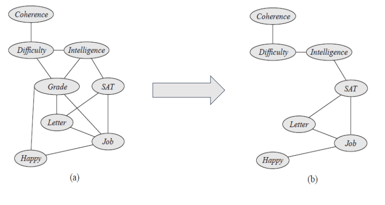

The conditioning algorithm is based on the fact that observing the value of certain variables can simplify the variable elimination process.
When a variable is not observed, we can use a case analysis to enumerate its possible values, perform the simplified VE computation, and then aggregate the results for the different values.
In terms of number of operations, the conditioning algorithm offers no benefit over the variable elimination algorithm.
However, it offers a time-space trade-off, which can be extremely important in cases where the factors created by variable elimination are too big to fit in main memory.
The conditioning algorithm is easiest to explain in the context of a Markov network.
Let Φ be a set of factors over X and P be the associated distribution.
We assume that any observations were already assimilated into Φ , so that our goal is to compute P(Y) for some set of query variables Y.
For example, if we want to do inference in the Student network given the evidence G = g, we would reduce the factors reduced to this context, giving rise to the network structure.
